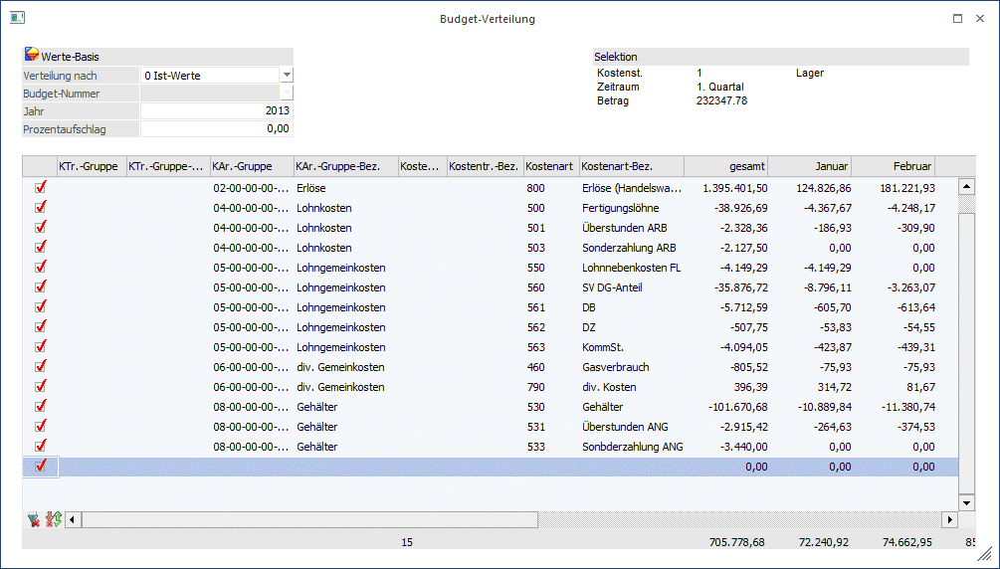
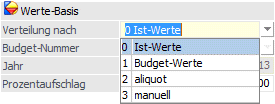
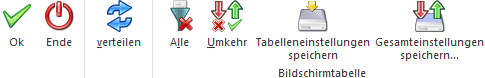

Sobald ein Wert in ein Feld eingetragen wird, in dem noch kein Budget-Wert erfasst wurde, wird das Fenster "Budget-Verteilung" automatisch geöffnet. Es kann auch manuell über den Button "Verteilen" geöffnet werden - Voraussetzung ist, dass der Cursor in einem Budget-Werte-Feld steht und dort ein Wert eingetragen wird.
Dieses Menü wird für eine erweiterte Verteilung der Budget-Werte verwendet. Es können hier in der Budgettabelle eingetragene Werte anhand von Ist- bzw. Budget-Werte bestimmter Jahre, bzw. gleichmäßig oder aliquot nach Verhältniszahlen auf die einzelnen Monate verteilt werden.
Der aufzuteilende Betrag wird immer zuerst in ein Budgetfeld der Tabelle eingetragen - im Menü "Budget-Verteilung" erfolgt die Auswahl der Verteilungsmethode sowie die Selektion, welche Stammdaten bei der Verteilung verwendet werden sollen.
In der Tabelle werden sämtliche Kombinationen von Stammdatensätzen, die mit der aktuellen Selektion möglich sind, angezeigt. Hier wird entschieden, welche Zeilen bei der Verteilung berücksichtigt werden sollen. Die Kombinationen, auf die bereits Budget-Werte erfasst wurden, werden automatisch zur Verteilung selektiert.
Ø Verteilung nach

Es wird ausgewählt, welche Art von Werten als Basis für die Verhältnis-Berechnung verwendet werden sollen. Bei Ist- und Budget-Werten kann zusätzlich noch ein Wirtschaftsjahr selektiert werden. Entscheidet man sich für "aliquot" oder "manuell" ist eine "Verhältnis-Nummer" auszuwählen.
Bei der Option "aliquot" wird das Gesamt-Budget auf alle markierten Zeilen aufgrund der Verhältnis-Nr. verteilt.
Mit der Option "manuell" können die Werte einzeln erfasst werden oder im Nachhinein über eine Verhältnis-Nr. neu verteilt werden.
Ø Budget-Nummer
Wurde im Feld "Verteilung nach" die Option "Budget-Werte" ausgewählt, kann hier ein bereits vorhandenes Budget als Basis für die Verteilung selektiert werden.
Ø Jahr
Auswahl des Jahres, das als Basis verwendet werden soll.
Ø Prozentaufschlag
Wurde eine Verteilung nach Budget- oder Ist-Werte
Ø Perioden-Verhältniszahlen
Perioden-Verhältniszahlen können vom Benutzer angelegt werden und können z.B. zur Budgetierung von Heizkosten oder anderen Kosten/Erlösen, die saisonal bedingten Schwankungen unterliegen, verwendet werden und es somit nicht sinnvoll ist, das Budget gleichmäßig über das Jahr zu verteilen.
Buttons

Ø OK
Ihre Selektion wird übernommen.
Ø Ende
Das Fenster schließt sich und ihre Selektion geht verloren.
Ø Verteilen
Mit dem Button "Verteilen" wird der in der Budgettabelle eingegebene Wert anhand der selektierten Verteiloption auf die in der Tabelle mittels Checkbox ausgewählten Stammdatenkombination verteilt.
Ø Alle
Über diesen Button werden entweder alle oder keine Einträge ausgewählt.
Ø Umkehr
Dieser Button kehrt die aktuelle Selektion um.
Ø Tabelleneinstellungen speichern
Die Spalten einer Tabelle können grundsätzlich an beliebige Positionen verschoben, bzw. in der Breite entsprechend angepasst werden. Durch Anwahl des Buttons "Tabelleneinstellungen speichern" werden die Einstellungen benutzerspezifisch gespeichert und bei dem nächsten Aufruf des Programmpunktes wieder vorgeschlagen.
Ø Gesamteinstellungen speichern
Im Gegensatz zu "Tabelleneinstellungen speichern" können mit "Gesamteinstellungen speichern" mehrere Tabellenaufbauten gespeichert und nach Wunsch geladen werden. Zusätzlich werden Sonderfunktionen der Tabelle (z.B. "Spalte gruppieren") ebenfalls bei der Speicherung bedacht.
Fensterbuttons
Ø
Über den Button "neu" können neue Verhältnisschemata angelegt werden.
Ø
Das im Drop-Down Feld ausgewählte Verhältnisschema wird geöffnet und kann editiert werden.